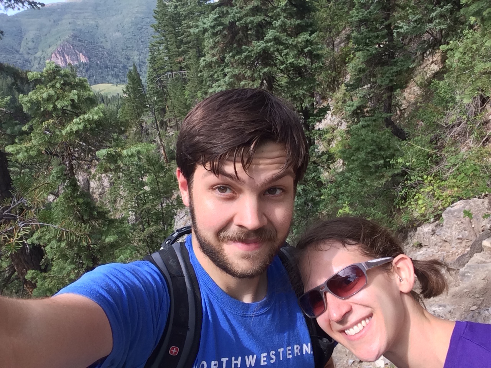

Ian Coley
Graduate Student
UCLA
Mathematics Department
Los Angeles, CA, USA 90095-1555
Office
MS 6603
Office Hours
Drop-in or by appointment
E-Mail
iacoley at math dot ucla dot edu
Teaching
Fall 2018: Math 495 (TA Consultant)
Summer 2018:
Math GRE Bootcamp
Spring 2018:
LS30B
Winter 2018:
Math 32BH
(instructor)
Fall 2017:
Math 32AH
(instructor)
Summer 2017:
Math 32A
(instructor)
Spring 2017:
Math 31B
and
Math 210C
Winter 2017:
Math 32BH
and
Math 210B
Fall 2016:
Math 32AH
and
Math 210A
Summer 2016:
Math 31B
and Math GRE Bootcamp
Winter 2016:
Math 110A
Fall 2015:
Math 31A
Spring 2015:
Math 31B
and
Math 210C
.
Winter 2015:
Math 31A
and
Math 210B
.
Fall 2014:
Math 31B
and
Math 115A
.
Resources for Undergraduates
Modeling Life (LS30)
on the go
!
Rogawski on the go used to be available, until the publisher noticed!
Folland
on the go
!
Math GRE Bootcamp
website, updated for Summer 2018
Research Interests
Derivators
and Homotopy Theory
Higher Algebraic K-Theory
Papers and Presentations
Stabilization of derivators
, arXiv:1802.04343. To appear in Journal of Homotopy and Related Structures.
Older stuff (Caveat lector! May contain errors, especially when noted.)
An explicit construction of an expander family, Northwestern University Undergraduate Honours Thesis. (
PDF file
)
Abelian Patterns and Periods, UNC Greensboro REU Presentation. (
Beamer file
)
Math 210, Algebra:
Fall 2013
,
Winter 2014
.
Math 225, Differential Topology/Geometry:
Fall 2013
,
Winter 2014
.
Algebra Qualifying Exam Solutions, Fall 2009 - Spring 2014. (
PDF File
)
Geometry/Topology Qualifying Exam Solutions, Spring 2008 - Spring 2014. (
PDF File
)
Some Solutions to Ravi Vakil's
Foundations of Algebraic Geometry
. (
PDF File
)
Non-mathematical Papers
Virgil's
Aeneid
in Neronian Literature, Joseph Clyde Murley Prize Honourable Mention 2013. (
PDF file
)
Augustus, Ekphrasis, and the Shield of Aeneas, Joseph Clyde Murley Prize Winner 2012. (
PDF file
)
Empowering LGBT Scientists
, an article I wrote for the Medill Equal Media Project at Northwestern
The simple sacral dimple: diagnostic yield of ultrasound in neonates, published in
Pediatric Radiology
. (
PDF file
)
About Me
My (Undergraduate) Resume
(Updated December 2016)
My (Graduate) CV
(Updated July 2018)